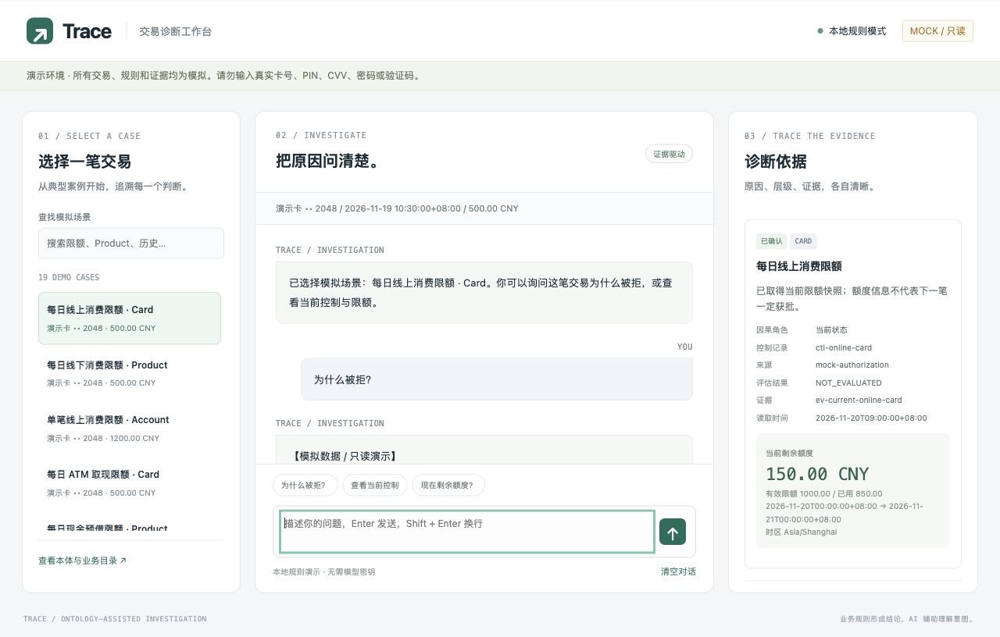

将原来混在service.py的条件和话术拆为独立配置。新增mappings、rules、policies与templates；本体动作只保留适用关系；服务负责编排，业务计算保持确定性。
PASS_WITH_NOTES · 62项测试通过；配置校验回放57次标准查询及旧系统映射。独立审查两项问题已修复，复查通过。
网页保持可用：本地工作台。启动命令：python3 -m app.server。
改字段映射、决策表和话术可分别影响对应行为；错误枚举、未知规则事实和模板引用被拒绝。风险披露先于表现；响应码仅作版本化线索。
设计和迁移
四层配置指南 · 内部补齐手册执行和验证证据
需求 · 计划 · 执行记录 · 验收 · 测试输出限制
仍为模拟只读，不是完整OWL或真实授权引擎。配置修改后重启；生产身份、银行工具和D01–D16定义需内部补齐。实际模型供应商未联调。
浏览器验收截图
